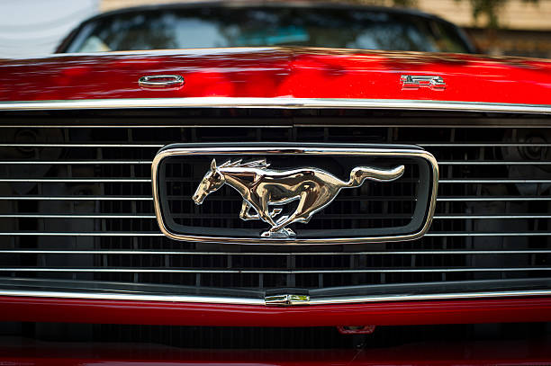

.jpg)
.jpg)
Executive stylist John Najjar, who was a fan of the World War II P-51 Mustang fighter plane, is credited by Ford to have suggested the name. Najjar co-designed the first prototype of the Ford Mustang known as Ford Mustang I in 1961, working jointly with fellow Ford stylist Philip T. Clark. The Mustang I made its formal debut at the United States Grand Prix in Watkins Glen, New York, on October 7, 1962, where test driver and contemporary Formula One race driver Dan Gurney lapped the track in a demonstration using the second "race" prototype. His lap times were only slightly off the pace of the F1 race cars.An alternative view was that Robert J. Eggert, Ford Division market research manager, first suggested the Mustang name. Eggert, a breeder of quarterhorses, received a birthday present from his wife of the book, The Mustangs by J. Frank Dobie in 1960. Later, the book's title gave him the idea of adding the "Mustang" name for Ford's new concept car. The designer preferred Cougar (early styling bucks can be seen wearing a Cougar grille emblem) or Torino (an advertising campaign using the Torino name was actually prepared), while Henry Ford II wanted T-bird II. As the person responsible for Ford's research on potential names, Eggert added "Mustang" to the list to be tested by focus groups; "Mustang," by a wide margin, came out on top under the heading: "Suitability as Name for the Special Car." The name could not be used in Germany, however, because it was owned by Krupp, which had manufactured trucks between 1951 and 1964 with the name Mustang. Ford refused to buy the name for about US$10,000 from Krupp at the time. Kreidler, a manufacturer of mopeds, also used the name, so Mustang was sold in Germany as the "T-5" until December 1978.
Lee Iacocca's assistant general manager and chief engineer, Donald N. Frey was the head engineer for the T-5 project—supervising the overall development of the car in a record 18 months while Iacocca himself championed the project as Ford Division general manager. The T-5 prototype was a two-seat, mid-mounted engine roadster. This vehicle employed the German Ford Taunus V4 engine. The original 1962 Ford Mustang I two-seater concept car had evolved into the 1963 Mustang II four-seater concept car which Ford used to pretest how the public would take interest in the first production Mustang. The 1963 Mustang II concept car was designed with a variation of the production model's front and rear ends with a roof that was 2.7 in (69 mm) lower. It was originally based on the platform of the second-generation North American Ford Falcon, a compact car.
Lee Iacocca, who had been one of the forces behind the original Mustang, became President of Ford Motor Company in 1970 and ordered a smaller, more fuel-efficient Mustang for 1974. Initially, it was to be based on the Ford Maverick, but ultimately was based on the Ford Pinto subcompact. The new model, called the "Mustang II", was introduced on September 21, 1973, two months before the first 1973 oil crisis, and its reduced size allowed it to compete against successful imported sports coupés such as the Japanese Datsun 240Z, Toyota Celica and the European Ford Capri(then Ford-built in Germany and Britain, sold in U.S. by Mercury as a captive import car). First-year sales were 385,993 cars, compared with the original Mustang's twelve-month sales record of 418,812. Ultimately, the Mustang II would be an early example of downsizing that would take place among Detroit's Big Three during the Malaise era. Iacocca wanted the new car, which returned the Mustang to its 1965 model year predecessor in size, shape, and overall styling, to be finished to a high standard, saying it should be "a little jewel." Not only was it smaller than the original car, but it was also heavier, owing to the addition of equipment needed to meet new U.S. emission and safety regulations. Performance was reduced, and despite the car's new handling and engineering features the galloping mustang emblem "became a less muscular steed that seemed to be cantering.
The 1979 Mustang was based on the larger Fox platform (initially developed for the 1978 Ford Fairmont and Mercury Zephyr). The larger body with an increased wheelbase yielded more interior space for four passengers, especially in the back seat, as well as a larger capacity trunk and a bigger engine bay. Body styles included a coupé (or notchback), hatchback, and convertible. Available trim levels included an unnamed base model (1979–1981), Ghia (1979–1981), Cobra (1979–1981, 1993), L (1982–1984), GL (1982–1983), GLX (1982–1983), GT (1982–1993), Turbo GT (1983–1984), LX (1984–1993), GT-350 20th Anniversary Edition (1984), SVO (1984–1986) and Cobra R (1993). Engines and drivetrain carried over from the Mustang II including the 2.3 L I4, 2.8 L V6, and 4.9 L V8 engines. A troublesome 2.3 L turbocharged I4 was available during initial production startup and then reappeared after undergoing improvements for the mid-year introduction of the 1983 Turbo GT. The 2.8 L V6, in short supply, was replaced with a 3.3 L I6 engine during the 1979-model year. That engine was ultimately replaced with a new 3.8 L V6 for 1983. The 302 cu in (4.9 L) V8 was suspended after 1979 and replaced with a smaller, 4.2 L V8 which was dropped in favor of the high output 302 cu in (4.9 L) V8 for 1982. From 1979 to 1986, the Capri was domestically produced as a Mercury-badged version of the Mustang, using a few of its own styling cues. The third-generation Mustang had two different front-end styles. From 1979 to 1986, the front end was angled back using four rectangular headlights, known by enthusiasts as "Four Eyes". The front end was restyled for 1987 to 1993 model years to reflect the contemporary, rounded-off "aero" style of the Ford Taurus using flush-composite headlamps and a smooth grille-less nose.
In November 1993, the Mustang debuted its first major redesign in fifteen years. Code-named "SN-95" by the automaker, it was based on an updated version of the rear-wheel drive Fox platform called "Fox-4." The new styling by Patrick Schiavone incorporated several styling cues from earlier Mustangs. For the first time since its introduction 1964, a notchback coupe model was unavailable. The base model came with a 3.8 OHV V6 3.8 L (232 cu in) engine rated at 145 bhp (108 kW) in 1994 and 1995, or 150 bhp (110 kW) (1996–1998), and was mated to a standard 5-speed manual transmission or optional 4-speed automatic. Though initially used in the 1994 and 1995 Mustang GTS, GT and Cobra, Ford retired the 302 cid pushrod small-block V8 after nearly 30 years of use, replacing it with the newer Modular 4.6 L (281 cu in) SOHC V8 in the 1996 Mustang GT. The 4.6 L V8 was initially rated at 215 bhp (160 kW), 1996–1997, but was later increased to 225 bhp (168 kW) in 1998
Ford introduced a re-designed 2005 model year Mustang at the 2004 North American International Auto Show, codenamed "S-197", that was based on the new D2C platform. Developed under the direction of Chief Engineer Hau Thai-Tang, a veteran engineer for Ford's IndyCar program under Mario Andretti, and exterior styling designer Sid Ramnarace, the fifth-generation Mustang's styling echoes the fastback Mustang models of the late-1960s. Ford's senior vice president of design, J Mays, called it "retro-futurism." The fifth-generation Mustang was manufactured at the Flat Rock Assembly Plant in Flat Rock, Michigan. For the 2005 to 2010 production years, the base model was powered by a 210 hp (157 kW; 213 PS) cast-iron block 4.0 L SOHC V6, while the GT used an aluminum block 4.6 L SOHC 3-valve Modular V8 with variable camshaft timing (VCT) that produced 300 hp (224 kW; 304 PS). Base models had a Tremec T5 5-speed manual transmission with Ford's 5R55S 5-speed automatic being optional. Automatic GTs also featured this, but manual GTs had the Tremec TR-3650 5-speed
The sixth generation Mustang was unveiled on December 5, 2013, in Dearborn, Michigan; New York, New York; Los Angeles, California; Barcelona, Spain; Shanghai, China; and Sydney, Australia. The internal project code name is S-550. Changes include widened body by 1.5 inches, 1.4 inches lower body, trapezoidal grille, and a 2.75-inch lower decklid, as well as new colors. The passenger volume is increased to 84.5 cubic feet, wheelbase is still 8 ft. 11.1 in. (107.1 in.), and three engine options are available: a newly developed 2.3 L EcoBoost 310 hp four-cylinder introduced to reach high tariff global markets like China,3.7 L 300 hp V6, or 5.0 L Coyote 435 hp V8, with either a Getrag six-speed manual or six-speed automatic transmission with paddle shifters. A new independent rear suspension (IRS) system was developed specifically for the new model. It also became the first version factory designed as a right hand drive export model to be sold overseas through Ford new car dealerships in right hand drive markets.